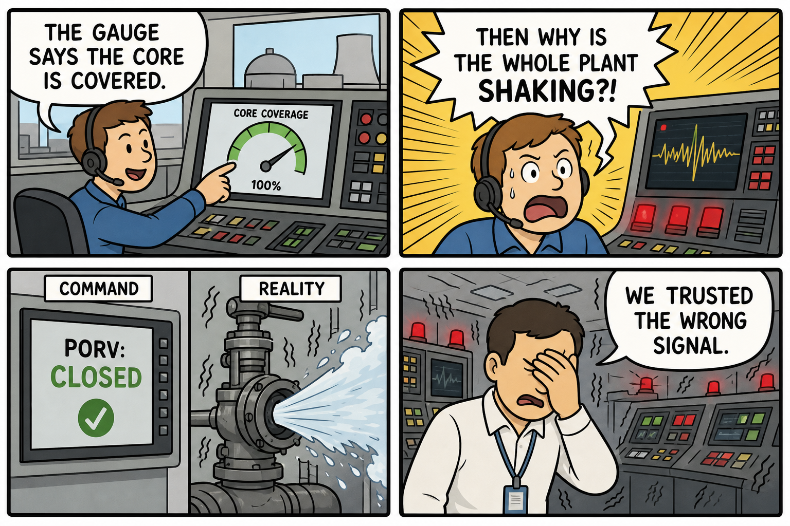
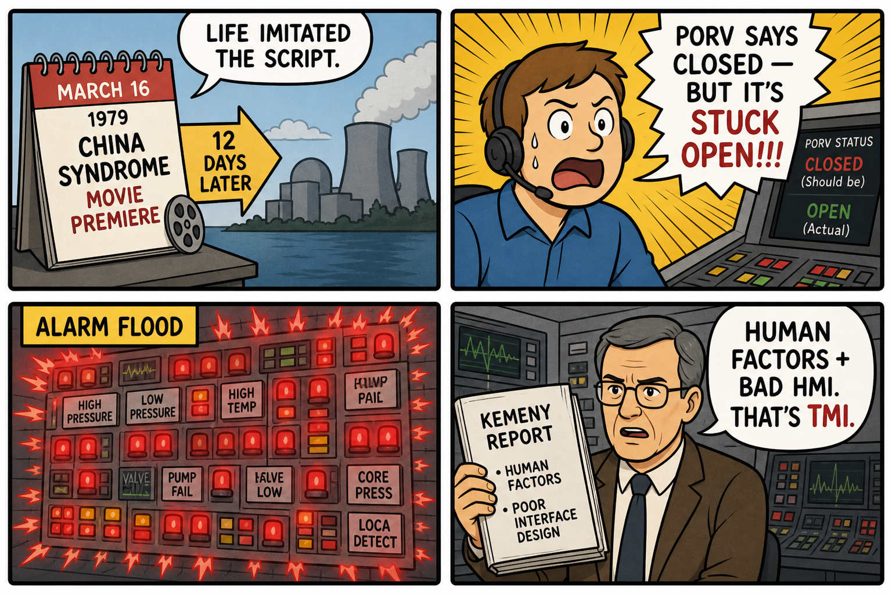

Module 02 / Nuclear Power Generation The China Syndrome (1979)
Sensor feedback vs. actual physical state, and the confirmation bias that follows a false-good reading.
The Script — Cinematic Anchor
Dialogue Extract
Scene Visual — Comic Strip

Dramatis Personae → OT Mapping
- Jack Godell (Shift Supervisor)→Lead Control Room Engineer — the operator who trusts instrumentation until physical evidence forces him to question it
- Ted Spindler (Control Room Operator)→Reactor Operator / Board Operator — hands-on the control desk during the transient
- Kimberly Wells (TV Reporter)→External Observer / Public Communications — analogous to the NRC and press interface during a real event
- Plant Management→Site Operations Management — balancing production continuity against an ambiguous safety indication
Diegetic Failure Mode
A turbine trip cascades into a cooling-water transient. A relief valve sticks open, draining reactor coolant, but the control room's indicator shows the valve as closed because it reads the solenoid command signal rather than the valve's actual physical position. Operators, trusting a level gauge that is itself misleading under the developing conditions, believe the core is adequately covered. A vibration felt through the plant structure — physical evidence outside the instrumentation chain — is what ultimately forces the crew to question the indicated state.
Theoretical ICS Architecture
Purdue Model Impact
Protocols & Control Logic
Pre-digital analog/hardwired control, predating fieldbus and networked SCADA. The control concepts that matter here transfer directly to modern OT:
- Command-state vs. true-state feedback: the PORV indicator reflected an actuation command, not a verified physical position — the same class of gap that appears in modern Modbus/DNP3 systems when a coil's read-back register mirrors the last write rather than an independent limit-switch or position sensor.
- ECCS/High-Pressure Injection as a SIS-equivalent function: automatically initiated on low pressure, later manually throttled back by operators who misread rising pressurizer level (actually caused by steam voiding, not excess coolant) as an overfill risk.
- Missing independent instrumentation: no direct core-cooling margin indication existed; operators had to infer core state from pressure and level readings that were themselves ambiguous during the transient.
The Plant — Empirical Grounding
Plant Visual — Comic Strip

Real-World Incident Precedent
The China Syndrome was released 12 days before the Three Mile Island Unit 2 (TMI-2) accident of March 28, 1979 — a coincidence widely noted at the time for its near-exact structural match. At TMI-2, a PORV on the pressurizer stuck open following a turbine trip; the control room indicator showed the valve closed because it displayed the solenoid command state, not actual valve position. Operators, observing a rising (not falling) pressurizer level — caused by coolant flashing to steam as inventory was lost — throttled back High Pressure Injection, worsening the loss of coolant. The result was a partial core meltdown, documented in the Kemeny Commission Report and NRC's NUREG-0600.
Cinematic vs. Reality Matrix
| Dimension | Media Depiction (The Script) | Industrial Reality (The Plant) |
|---|---|---|
| Failure Vector | A stuck relief valve and a falsely reassuring gauge combine to nearly cause a meltdown, averted by a vigilant supervisor. | Near-identical mechanism at TMI-2: a stuck-open PORV with a command-state (not position) indicator, compounded by operators throttling ECCS based on a misread pressurizer level. |
| Time to Impact | Film compresses the crisis into a tight, real-time thriller sequence of roughly an hour or two. | TMI-2 unfolded over approximately 16 hours from initial trip to core-damage stabilization; operators took about 2 hours 20 minutes to recognize the loss-of-coolant condition. |
| Operator Visibility | Operators trust the gauge until a physical cue (vibration) contradicts it. | Matches reality closely: no direct PORV position sensor existed, and pressurizer level readings were actively misleading — a documented instrumentation design gap, not an operator competency failure. |
| Failsafe Behavior | Automatic safety systems are shown responding, but operator disbelief in the readings delays proper action. | ECCS/High Pressure Injection did auto-initiate on low pressure as designed, but was manually throttled by operators trusting the (deceptive) pressurizer level indication over the core-cooling reality. |
Root-Cause Analysis (RCA)
Classification: Human Factors / HMI Alarm Interpretation + Process DesignThe Kemeny Commission identified the root cause as primarily human factors compounded by instrumentation design: operators had no direct means to verify PORV position or true core-cooling margin, and were confronted with over 100 simultaneous alarms in the opening minutes — an alarm flood that obscured rather than clarified the plant's true state. This is a foundational case in the history of alarm management standards: the absence of alarm prioritization directly contributed to a slow, confused diagnosis.
Engineering Runbook & Countermeasures
Telemetry Envelope
| Parameter | Normal / Baseline | Trip Threshold | Condition at Accident |
|---|---|---|---|
| Reactor Coolant System pressure | ~2,155 psig | PORV lift setpoint ~2,255 psig, reseat ~2,205 psig | Fell abnormally after PORV stuck open post-lift, while indicator showed closed |
| Pressurizer level | Normal band ~220–360 inches | High-level alarm near top of band | Rose deceptively due to steam voiding, read by operators as "going solid," prompting HPI throttle-back |
| Core subcooling margin | >20°F (no direct instrument existed pre-TMI) | N/A — added post-accident as Subcooling Margin Monitor | Unmonitored directly; inferred incorrectly from pressure/level alone |
Mitigation / Recovery Protocol
- Independent valve position telemetry: install direct limit-switch or position-sensor feedback on all safety-relevant valves, reporting actual state independent of the command/solenoid signal.
- Direct core-cooling margin instrumentation: provide operators a computed subcooling margin (the post-TMI Subcooling Margin Monitor) rather than requiring inference from pressure and level alone.
- Alarm rationalization: prioritize and suppress redundant/consequential alarms during a transient so the first-out and safety-critical alarms remain visible, rather than presenting a flood of over 100 simultaneous indications.
- Procedure change — never throttle ECCS/HPI on level alone: during a suspected loss-of-coolant event, safety injection is not reduced based on pressurizer level without independent confirmation of core-cooling adequacy.
- Simulator training for multiple-failure, ambiguous-instrumentation scenarios: post-TMI, NRC-mandated simulator retraining specifically targeted small-break LOCA scenarios combined with misleading indications.